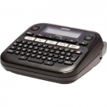
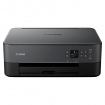
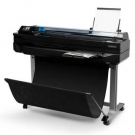
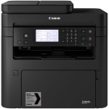
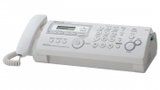
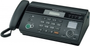
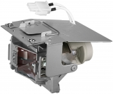
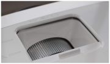
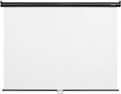
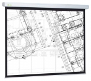

| Модель: | Тип: | Описание: | Рейтин: | Цена: |
Brother PT-D210VP  |
Термопринтер |
Основные |
*** | 211,78 руб. |
Canon Pixma TS5340 [3773C007]  |
МФУ | Краткая информация Тип МФУ Формат A4 (21х29.7 см) Поддержка цвета цветной Технология печати струйный Количество цветов 4 Копир да Сканер да Автоматическая двусторонняя печать да Двустороннее копирование нет Ethernet (LAN) нет Wi-Fi да |
**** | 183,23 руб. |
HP DesignJet T520 610 мм (версия 2018)  |
Плоттер | Краткая информация Тип плоттер Поддержка цвета цветной Копир нет Сканер нет Автоматическая двусторонняя печать нет Максимальное разрешение печати (dpi) 2400x1200 Ethernet (LAN) да Wi-Fi да, да, да |
**** | 1 414,37 руб. |
Canon i-Sensys MF269dw [2925C028]  |
МФУ | Краткая информация Тип МФУ Поддержка цвета черно-белый Копир да Автоматическая двусторонняя печать нет Максимальное разрешение печати (dpi) 200x400 Двустороннее копирование да Максимальное разрешение сканирования (dpi) 600x600 Ethernet (LAN) да Wi-Fi да |
***** | 1 001,29 руб. |
Panasonic KX-FP218  |
Факс | Краткая информация Функция копирования да Скорость передачи данных 14.4 кбит/с (V.17) Приём при отсутствии бумаги 28 страниц Автоподача 10 листов Приёмный лоток 20 листов |
**** | 264,16 руб. |
Panasonic KX-FT988  |
Факс | Краткая информация Функция копирования да Скорость передачи данных 9.6 кбит/с (V.29) Приём при отсутствии бумаги 28 страниц Автоподача 10 листов Приёмный лоток нет |
***** | 360,00 руб. |
Sony VPL-HW45ES (белый)  |
Проектор | Краткая информация Тип матрицы SXRD Назначение для домашнего кинотеатра Соотношение сторон 16:9 Разрешение матрицы FullHD (1920x1080) Поддержка 3D-изображения да Световой поток 1800 Ресурс лампы 6000 Wi-Fi нет USB да Ethernet нет |
***** | 4 325,23 руб |
Dune HD Traveler  |
Проектор | Краткая информация Тип матрицы DLP Соотношение сторон 4:3 Поддержка 3D-изображения да Световой поток 3200 Ресурс лампы 10 USB 1 Ethernet нет |
*** | 936,49 руб. |
BenQ W1090 [9H.JG277.27E]  |
Проектор | Краткая информация Тип матрицы DLP Соотношение сторон 16:9 Поддержка 3D-изображения да Световой поток 2000 Ресурс лампы 3 USB да Ethernet нет |
**** | 1 779,23 руб. |
Digis Optimal-C 180x180  |
Проекционный экран | Краткая информация Конструкция рулонный ручной Диагональ 100 " Угол обзора 160 Покрытие матовое белое Для обратной проекции нет Длина рабочей области 180 см Ширина рабочей области 180 см |
*** | 100,67 руб |
CACTUS CS-PSW-104x186 настенно-потолочный  |
Проекционный экран | Краткая информация Конструкция рулонный ручной Диагональ 84" Покрытие матовое белое Для обратной проекции нет Длина рабочей области 186 см Ширина рабочей области 104.6 см |
**** | 136,49 руб. |